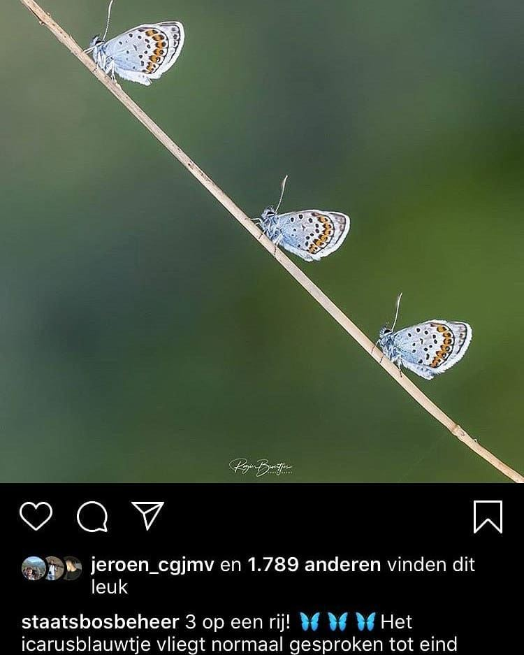

Heideblauwtje, geen icarusblauwtje
20 september 2020 · Staatsbosbeheer
- Op de foto
- Heideblauwtje
- Het ging over
- Icarusblauwtje

3 prachtige heideblauwtjes op een rijtje. Even aanpassen @staatsbosbeheer.

3 prachtige heideblauwtjes op een rijtje. Even aanpassen @staatsbosbeheer.